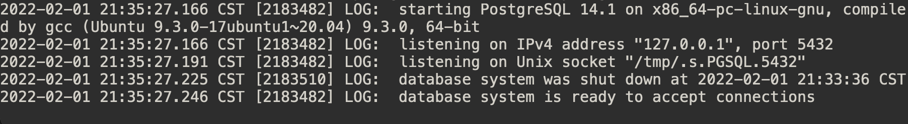
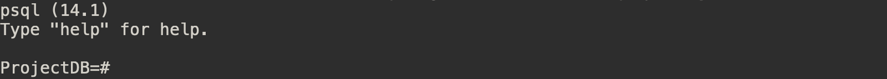

Run PostgreSQL
PostgreSQL takes a classic server-client architecture. Therefore, we need two terminal windows to start the server and client separately. Let's call them Terminal S (for server) and Terminal C (for client) respectively.
First time start the server and run the client
Terminal S
- Make sure you are in the installation folder
$W$/install.
cd $W$/install- Start the server
bin/postgres -D dataYou should see the following output.  It will keep printing out logs in this terminal. We can use this terminal to get information on what is happening in our DBMS.
Terminal C
To run the client, open another terminal and use the following command to create a database to use: (In this example, we call the database ProjectDB)
- Make sure you are in the installation folder
$W$/install.
cd $W$/install- Create the ProjectDB database.
bin/createdb ProjectDBWe interact with our DBMS by using a program called psql.
- Run psql
bin/psql ProjectDBYou should see the following output.  You can then type and run sql in this program.
Shut down the server
It is a good habit to shut down the server every time you stop working on the lab. To shut down the server, go to Terminal S and shut it down with ctrl-c.
Run PostgreSQL next time
The next time you want to start the database again, you only need to run two terminals and start the server and client again.
- Make sure you are in the installation folder
$W$/install.
cd $W$/install- Start the server (
Terminal S)
bin/postgres -D data- Run psql (
Terminal C)
bin/psql ProjectDB